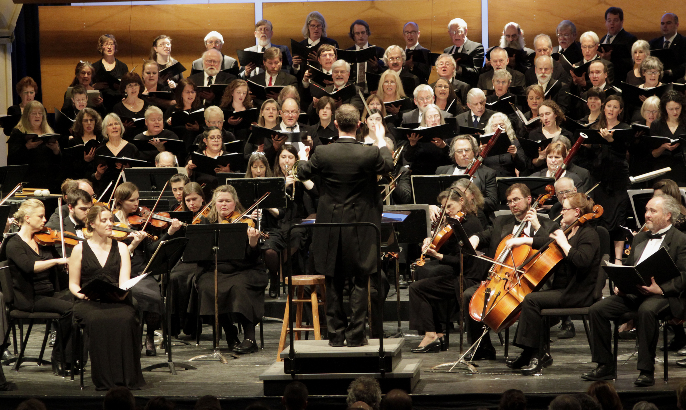

Types of Live Music
A recital is a performance by a soloist or a small group. It can highlight a single performer, sometimes accompanied by piano, or a performance of the works of a single composer, or a single instrument.

Some performers or groups put on very elaborate and expensive shows. To create a memorable and exciting atmosphere and increase the spectacle, performers frequently include additional entertainment devices. These can include elaborate stage lighting, electronic imagery via (IMAG) system and/or pre-recorded video, inflatable sets, artwork or other set pieces, various special effects such as theatrical smoke and fog and pyrotechnics, and unusual costumes or wardrobe.

Classical concerts embody two different styles of classical music — orchestral and choral. They are performed by a plethora of different groups in concert halls or other performing art venues. For orchestra, depending on the number of performers and the instruments used, concerts include chamber music, chamber orchestra, or symphony orchestra.
Phsycological Impact
In some concert settings, such as classical music, the audience participates passively. In other concert settings, especially folk or rock concerts, the performers encourage and engage with an active audience response. The intensity of the sound environment and the crush of the mass audience can induce a trance-like psychological state in some audience members. Vocalists and other musicians often dance or strut on stage as they perform, and the audience will often dance or sway in response.